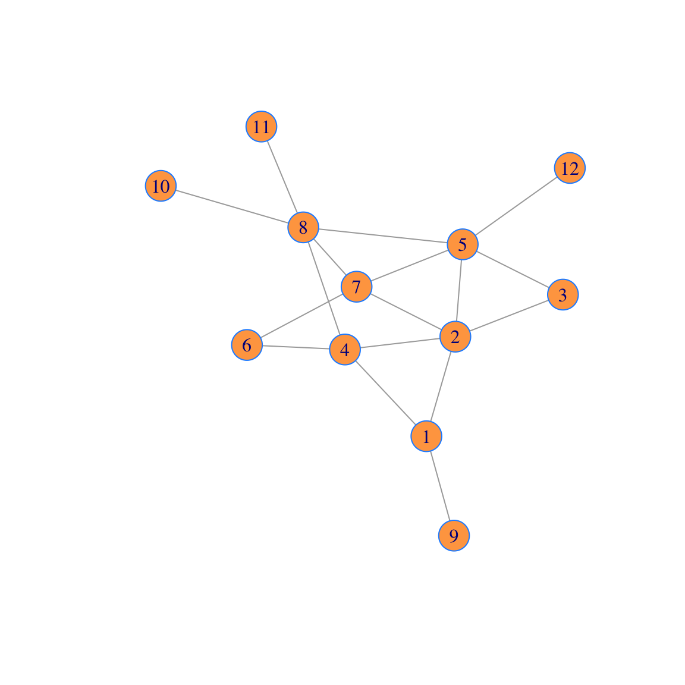
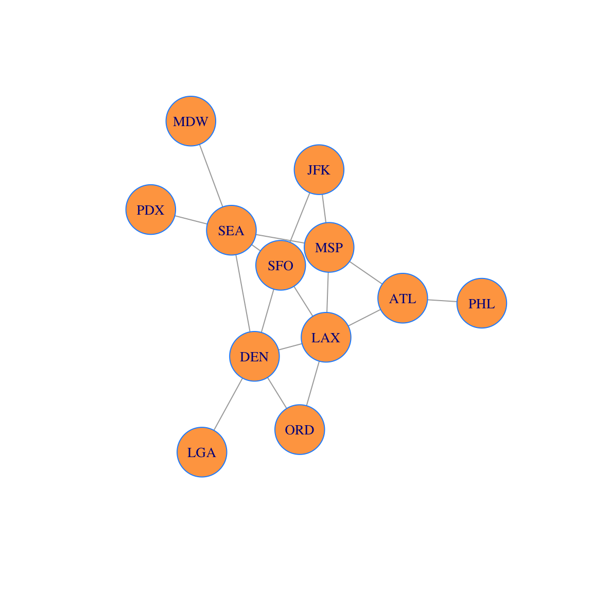
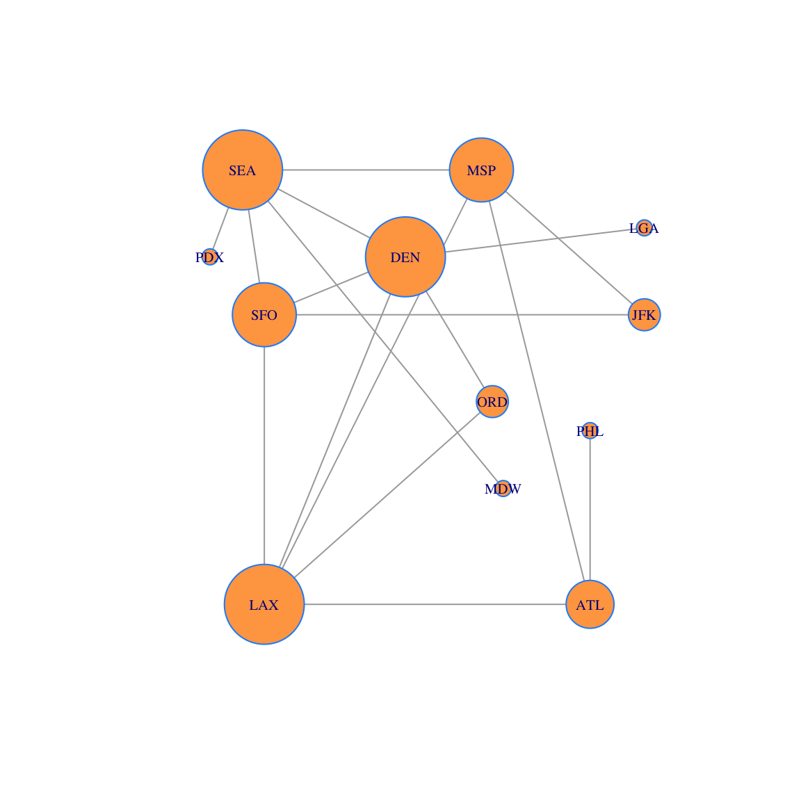
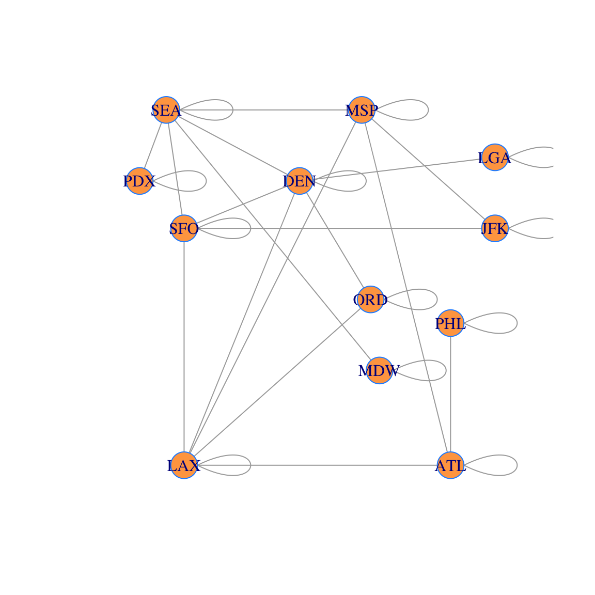
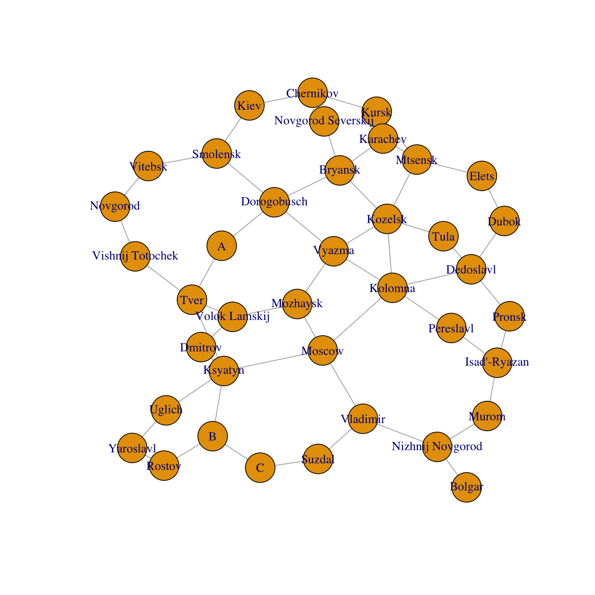

Section 23 Network Centralities
In this example, we will use a package called igraph. To install it, you need to go to the packages window (bottom right), choose install, and search for and install igraph from the packages window.
The igraph R package isn’t all that well documented. Here are some places to look for documentation if you want to learn about other features. Let me know if you find any other good references:
23.1 Graphs and Networks
Graphs consists of vertices and the edges between them. These edges are used to model connections in a wide array of applications, including but not limited to, physical, biological, social, and information networks. To emphasize the application to real-world systems, the term Network Science is sometimes used. So we will use the terms graph and network interchangeably. In this application, we will see that linear algebra is an important tool in the study of graphs.
23.1.1 Adjacency Matrices
Matrices are used to represent graphs and networks in a very direct way: we place a 1 in position \((i,j)\) of the adjacency matrix \(A\) of the graph \(G\), if there is an edge from vertex \(i\) to vertex \(j\) in \(G\). Here is the adjacency matrix we will use today.
A = rbind(
c(0,1,0,1,0,0,0,0,1,0,0,0), c(1,0,1,1,1,0,1,0,0,0,0,0),
c(0,1,0,0,1,0,0,0,0,0,0,0), c(1,1,0,0,0,1,0,1,0,0,0,0),
c(0,1,1,0,0,0,1,1,0,0,0,1), c(0,0,0,1,0,0,1,0,0,0,0,0),
c(0,1,0,0,1,1,0,1,0,0,0,0), c(0,0,0,1,1,0,1,0,0,1,1,0),
c(1,0,0,0,0,0,0,0,0,0,0,0), c(0,0,0,0,0,0,0,1,0,0,0,0),
c(0,0,0,0,0,0,0,1,0,0,0,0), c(0,0,0,0,1,0,0,0,0,0,0,0))
A## [,1] [,2] [,3] [,4] [,5] [,6] [,7] [,8] [,9] [,10] [,11] [,12]
## [1,] 0 1 0 1 0 0 0 0 1 0 0 0
## [2,] 1 0 1 1 1 0 1 0 0 0 0 0
## [3,] 0 1 0 0 1 0 0 0 0 0 0 0
## [4,] 1 1 0 0 0 1 0 1 0 0 0 0
## [5,] 0 1 1 0 0 0 1 1 0 0 0 1
## [6,] 0 0 0 1 0 0 1 0 0 0 0 0
## [7,] 0 1 0 0 1 1 0 1 0 0 0 0
## [8,] 0 0 0 1 1 0 1 0 0 1 1 0
## [9,] 1 0 0 0 0 0 0 0 0 0 0 0
## [10,] 0 0 0 0 0 0 0 1 0 0 0 0
## [11,] 0 0 0 0 0 0 0 1 0 0 0 0
## [12,] 0 0 0 0 1 0 0 0 0 0 0 0We make a graph from the adjacency matrix as follows:
g=graph_from_adjacency_matrix(A,mode='undirected')
plot(g, vertex.color='tan1', vertex.frame.color="dodgerblue")
Observe that there is an edge from vertex \(i\) to vertex \(j\) if and only if there is a 1 in position \((i,j)\) in the matrix.
This network is the route map of a small airline. We will add vertex labels and change the vertex size:
airports =
c("ATL","LAX","ORD","MSP","DEN","JFK","SFO","SEA","PHL","PDX","MDW","LGA")
V(g)$label = airports
plot(g,vertex.size=30, vertex.color='tan1', vertex.frame.color="dodgerblue")
23.1.2 Graph Layouts
There are a variety of graph layout algorithms which place the vertices in the plane. You can find many algorithms in the igraph documentation. For example, here is a layout on a circle
coords = layout_in_circle(g)
plot(g, layout=coords, vertex.size = 30,vertex.label.cex=0.85, vertex.color='tan1', vertex.frame.color="dodgerblue")The Fruchterman-Reingold algorithm is one of the most popular graph vertex layout algorithms. It is a force-directed layout that tries to get a nice-looking graph where edges are similar in length and cross each other as little as possible. The algorithm simulates the graph as a physical system. Vertices are electrically charged particles that repulse each other when they get too close. The edges act as springs that attract connected vertices closer together. As a result, vertices are evenly distributed through the chart area. The resulting layout is intuitive: vertices which share more connections are closer to each other.
coords = layout_with_fr(g)
plot(g, layout=coords, vertex.size = 30, vertex.label.cex=0.85, vertex.color='tan1', vertex.frame.color="dodgerblue")
We can also choose to layout vertices by hand:
23.2 Degree Centrality
If we are considering placing an office in one of our airport locations, we may want to chose the most central hub for that office. It turns out that there are many interesting centrality measures for networks. We will talk about two of them today.
The simplest measure centrality is the degree of the vertex, or the number of edges connected to that vertex. We calculate the degree centralities from the adjacency matrix as follows:
- First make a vector \(\mathsf{v}\) of all 1’s; then
- multiply \(\mathsf{p} = A\mathsf{v}\) to get the degree proportions; and
- divide the vector \(\mathsf{p}\) by the sum of its entries.
The result is a normalized vector \(\mathsf{p}\) whose entries sum to 1. Each entry of vector \(\mathsf{p}\) represents to proportion of edges incident with the corresponding vertex.
v=rep(1,nrow(A)) # all 1s vector
d = A %*% v # degrees
p=d/sum(d) # proportion of degrees
dp = cbind(d,p) # show d and p together side-by-side in a matrix
rownames(dp) = airports
colnames(dp) = c("degree","proportion")
dp## degree proportion
## ATL 3 0.08823529
## LAX 5 0.14705882
## ORD 2 0.05882353
## MSP 4 0.11764706
## DEN 5 0.14705882
## JFK 2 0.05882353
## SFO 4 0.11764706
## SEA 5 0.14705882
## PHL 1 0.02941176
## PDX 1 0.02941176
## MDW 1 0.02941176
## LGA 1 0.02941176We can also sort the vertices by degree.
ii=order(d,decreasing=TRUE) # find the decreasing order of d
dp2 = dp[ii,] # sort the data frame in that order
dp2## degree proportion
## LAX 5 0.14705882
## DEN 5 0.14705882
## SEA 5 0.14705882
## MSP 4 0.11764706
## SFO 4 0.11764706
## ATL 3 0.08823529
## ORD 2 0.05882353
## JFK 2 0.05882353
## PHL 1 0.02941176
## PDX 1 0.02941176
## MDW 1 0.02941176
## LGA 1 0.02941176Now let’s create a data visualization. We plot the network and size each vertex according to the vector \(p\). The larger vertices have more edges connected to them. This conveys information to the viewer about the relative importance of the vertices.
plot(g, layout=locations, vertex.size=250*p,vertex.label.cex=0.65, vertex.color='tan1', vertex.frame.color="dodgerblue")
23.3 Gould’s Index
Gould’s Index is a measure of centrality that uses the dominant eigenvector of a matrix. It was introduced by geographer P. R. Gould in 1967 to analyze the geographical features on maps. We will build up Gould’s Index step-by-step so that we can understand what it measures.
23.3.1 Step 1: Add Layovers
The first step is typically to add the identity matrix to the adjancency matrix \(A\) to get a new matrix
\[
B = A + I.
\]
The \(n \times n\) identity matrix in R is obtained by using diag(n). Adding the identity gives a connection from a vertex to itself. This loop edge corresponds to staying at the current city during a layover.
## [,1] [,2] [,3] [,4] [,5] [,6] [,7] [,8] [,9] [,10] [,11] [,12]
## [1,] 1 1 0 1 0 0 0 0 1 0 0 0
## [2,] 1 1 1 1 1 0 1 0 0 0 0 0
## [3,] 0 1 1 0 1 0 0 0 0 0 0 0
## [4,] 1 1 0 1 0 1 0 1 0 0 0 0
## [5,] 0 1 1 0 1 0 1 1 0 0 0 1
## [6,] 0 0 0 1 0 1 1 0 0 0 0 0
## [7,] 0 1 0 0 1 1 1 1 0 0 0 0
## [8,] 0 0 0 1 1 0 1 1 0 1 1 0
## [9,] 1 0 0 0 0 0 0 0 1 0 0 0
## [10,] 0 0 0 0 0 0 0 1 0 1 0 0
## [11,] 0 0 0 0 0 0 0 1 0 0 1 0
## [12,] 0 0 0 0 1 0 0 0 0 0 0 1Here is what the corresponding network (with layovers) looks like. You can see why we refer to these additional edges as “loops.†However, we usually do not draw the network with these added loops to keep the figure less cluttered.
g2=graph_from_adjacency_matrix(B,mode='undirected')
airports =
c("ATL","LAX","ORD","MSP","DEN","JFK","SFO","SEA","PHL","PDX","MDW","LGA")
V(g2)$label = airports
coords = layout_with_fr(g2)
plot(g2, layout=coords, vertex.color='tan1', vertex.frame.color="dodgerblue")
23.3.2 Step 2: Dynamical System
Starting with the all 1’s vector \(\mathsf{v}_0 = [1, 1, \ldots ,1 ]^{\top}\) create the dynamical system \[ \mathsf{v}_0, \quad \mathsf{v}_1 = B \mathsf{v}_0, \quad \mathsf{v}_2 = B \mathsf{v}_1, \quad \mathsf{v}_3 = B \mathsf{v}_2, \quad \cdots , \quad \mathsf{v}_n = B \mathsf{v}_{n-1}. \] Here we calculate \(\mathsf{v}_1, \ldots, \mathsf{v}_{10}\) using a loop:
N = 10
X = matrix(0,nrow=nrow(B),ncol=N+1) # make a a table of 0s
X[,1] = rep(1,nrow(B)) # put v0 in first column
for (i in 1:N) { # loop N times
X[,i+1] = B %*% X[,i] # apply B to the ith column and make it the (i+1)st column
}
rownames(X) = airports
colnames(X) = 0:10
X## 0 1 2 3 4 5 6 7 8 9 10
## ATL 1 4 17 76 347 1603 7442 34638 161411 752642 3510616
## LAX 1 6 29 139 650 3044 14211 66352 309652 1445058 6743119
## ORD 1 3 15 72 343 1614 7567 35389 165336 771972 3603377
## MSP 1 5 24 109 507 2349 10936 50930 237450 1107376 5165837
## DEN 1 6 28 132 621 2909 13611 63595 296984 1386347 6470458
## JFK 1 3 13 63 294 1377 6418 29939 139617 651292 3038392
## SFO 1 5 26 122 576 2692 12585 58748 274225 1279724 5971890
## SEA 1 6 26 120 551 2563 11923 55591 259246 1209469 5642972
## PHL 1 2 6 23 99 446 2049 9491 44129 205540 958182
## PDX 1 2 8 34 154 705 3268 15191 70782 330028 1539497
## MDW 1 2 8 34 154 705 3268 15191 70782 330028 1539497
## LGA 1 2 8 36 168 789 3698 17309 80904 377888 1764235Discuss with your group: Each of the entries of the vector \(\mathsf{v}_{t}\) in the columns of the table above corresponds to “a trip of length \(t\).†What kinds of trips does the \(i\)th entry of \(\mathsf{v}_{t}\) count? Here is how you can figure this out:
- Compare the table of vectors with the picture of the network with layovers.
- Start by looking at the \(t=1\) column. The \(i\)th entry has something to do with the \(i\)th city.
- Next, look at the \(t=2\) column. And so on.
- Once you have noticed the connection between the network and data, explain why the rule \(\mathsf{v}_t = B \mathsf{v}_{t-1}\) leads to this result.
- These numbers get big fast! Let’s normalize by dividing by the sum each time. The vectors will always be proportions then, which sum to 1. See the table below. What do the entries in this table tell us?
N = 10
X = matrix(0,nrow=nrow(B),ncol=N+1)
X[,1] = rep(1,nrow(B))
for (i in 2:(N+1)) {
X[,i] = B %*% X[,i-1]
X[,i] = X[,i]/sum(X[,i])
}
rownames(X) = airports
colnames(X) = 0:10
X## 0 1 2 3 4 5
## ATL 1 0.08695652 0.08173077 0.07916667 0.07773297 0.07708213
## LAX 1 0.13043478 0.13942308 0.14479167 0.14560932 0.14637430
## ORD 1 0.06521739 0.07211538 0.07500000 0.07683692 0.07761108
## MSP 1 0.10869565 0.11538462 0.11354167 0.11357527 0.11295441
## DEN 1 0.13043478 0.13461538 0.13750000 0.13911290 0.13988267
## JFK 1 0.06521739 0.06250000 0.06562500 0.06586022 0.06621466
## SFO 1 0.10869565 0.12500000 0.12708333 0.12903226 0.12944797
## SEA 1 0.13043478 0.12500000 0.12500000 0.12343190 0.12324485
## PHL 1 0.04347826 0.02884615 0.02395833 0.02217742 0.02144643
## PDX 1 0.04347826 0.03846154 0.03541667 0.03449821 0.03390075
## MDW 1 0.04347826 0.03846154 0.03541667 0.03449821 0.03390075
## LGA 1 0.04347826 0.03846154 0.03750000 0.03763441 0.03793999
## 6 7 8 9 10
## ATL 0.07674064 0.07657108 0.07647933 0.07643081 0.07640399
## LAX 0.14654141 0.14667834 0.14671848 0.14674567 0.14675521
## ORD 0.07802962 0.07823125 0.07833906 0.07839377 0.07842281
## MSP 0.11277017 0.11258632 0.11250792 0.11245405 0.11242772
## DEN 0.14035431 0.14058369 0.14071617 0.14078356 0.14082110
## JFK 0.06618132 0.06618343 0.06615295 0.06613871 0.06612665
## SFO 0.12977438 0.12986887 0.12993256 0.12995600 0.12997042
## SEA 0.12294795 0.12288997 0.12283525 0.12282160 0.12281194
## PHL 0.02112894 0.02098089 0.02090908 0.02087259 0.02085358
## PDX 0.03369906 0.03358136 0.03353774 0.03351435 0.03350515
## MDW 0.03369906 0.03358136 0.03353774 0.03351435 0.03350515
## LGA 0.03813315 0.03826343 0.03833372 0.03837453 0.0383962823.3.3 Step 4: Eigen-analysis
We see that the vectors are converging to a common direction, and we know that dynamical systems converge to the dominant eigenvector (if there is one). We can see below that there is a dominant eigenvector in this case.
## eigen() decomposition
## $values
## [1] 4.66618847 2.64207538 2.41909839 1.80037113 1.27260439
## [6] 1.00000000 1.00000000 0.49835918 0.02718633 -0.67732874
## [11] -0.92557189 -1.72298263
##
## $vectors
## [,1] [,2] [,3] [,4] [,5]
## [1,] -0.23401334 0.57249329 -0.03677166 0.289569576 -0.11347970
## [2,] -0.44971357 0.23508235 0.28327135 -0.009053428 0.29280642
## [3,] -0.24039858 -0.04730698 0.44304618 0.102332378 0.42192015
## [4,] -0.34439328 0.35635470 -0.30954196 -0.120977575 0.09253829
## [5,] -0.43163295 -0.31276398 0.34545477 0.090957309 -0.17778914
## [6,] -0.20257820 0.10572025 -0.24645181 -0.612347635 -0.18646435
## [7,] -0.39829657 -0.18275409 -0.04019741 -0.369127791 -0.14336929
## [8,] -0.37630557 -0.32813461 -0.43931838 0.235004528 0.03236396
## [9,] -0.06383014 0.34864008 -0.02591199 0.361794131 -0.41627977
## [10,] -0.10264218 -0.19982920 -0.30957570 0.293619448 0.11872135
## [11,] -0.10264218 -0.19982920 -0.30957570 0.293619448 0.11872135
## [12,] -0.11773343 -0.19046871 0.24343257 0.113643916 -0.65218735
## [,6] [,7] [,8] [,9]
## [1,] 0.000000e+00 0.000000e+00 0.17344569 0.19570619
## [2,] 2.626816e-16 1.203957e-16 0.27532162 0.33415547
## [3,] -1.576610e-16 -4.434216e-17 -0.59911594 -0.08232149
## [4,] 4.851644e-01 1.208947e-01 -0.01657232 -0.32336571
## [5,] 1.198948e-16 1.395385e-16 0.02521939 -0.25407199
## [6,] -5.005332e-18 -9.291441e-17 -0.52296040 0.18953651
## [7,] -4.851644e-01 -1.208947e-01 0.27891061 0.13898200
## [8,] -1.021498e-16 -3.393381e-17 0.08250644 -0.40482358
## [9,] -4.851644e-01 -1.208947e-01 -0.34575674 -0.20117541
## [10,] -1.709709e-01 6.861261e-01 -0.16447314 0.41613681
## [11,] 1.709709e-01 -6.861261e-01 -0.16447314 0.41613681
## [12,] 4.851644e-01 1.208947e-01 -0.05027381 0.26117231
## [,10] [,11] [,12]
## [1,] 6.653425e-01 0.08742351 0.026476499
## [2,] -4.571765e-01 -0.14917762 0.397124122
## [3,] 1.379670e-01 0.40635541 -0.072909426
## [4,] -2.621537e-01 0.02623868 -0.459495824
## [5,] 2.257605e-01 -0.63328894 -0.198593023
## [6,] 1.563407e-01 -0.22162883 0.307139725
## [7,] -8.104161e-05 0.40052356 -0.376840313
## [8,] 7.521122e-02 0.23285847 0.520458800
## [9,] -3.966679e-01 -0.04540132 -0.009723345
## [10,] -4.483988e-02 -0.12092951 -0.191135557
## [11,] -4.483988e-02 -0.12092951 -0.191135557
## [12,] -1.345953e-01 0.32888356 0.072932167For an adjacency matrix \(A\), the dominant eigenvector of \(B + I\), scaled to sum to 1, is called Gould’s Index of network centrality. Here we extract it, scale it to sum to 1, and we show that the dynamical system is converging to it.
# Get the dominant eigenvector
vecs = eigen(B)$vectors
gould = vecs[,1]
gould = gould/sum(gould)
# Compute the dynamical system
N = 30
X = matrix(0,nrow=nrow(B),ncol=N+1)
X[,1] = rep(1,nrow(B))/nrow(B)
for (i in 1:N) {
X[,i+1] = B %*% X[,i]
X[,i+1] = X[,i+1]/sum(X[,i+1])
}
# Display the data
Y = cbind(X[,1],X[,2],X[,3],X[,11],X[,21],X[,31],gould)
rownames(Y) = airports
colnames(Y) = cbind("n=0","n=1","n=2","n=10","n=20","n=30","Gould")
Y## n=0 n=1 n=2 n=10 n=20 n=30
## ATL 0.08333333 0.08695652 0.08173077 0.07640399 0.07637073 0.07637062
## LAX 0.08333333 0.13043478 0.13942308 0.14675521 0.14676475 0.14676474
## ORD 0.08333333 0.06521739 0.07211538 0.07842281 0.07845441 0.07845446
## MSP 0.08333333 0.10869565 0.11538462 0.11242772 0.11239338 0.11239329
## DEN 0.08333333 0.13043478 0.13461538 0.14082110 0.14086400 0.14086410
## JFK 0.08333333 0.06521739 0.06250000 0.06612665 0.06611175 0.06611172
## SFO 0.08333333 0.10869565 0.12500000 0.12997042 0.12998468 0.12998472
## SEA 0.08333333 0.13043478 0.12500000 0.12281194 0.12280789 0.12280792
## PHL 0.08333333 0.04347826 0.02884615 0.02085358 0.02083114 0.02083107
## PDX 0.08333333 0.04347826 0.03846154 0.03350515 0.03349742 0.03349744
## MDW 0.08333333 0.04347826 0.03846154 0.03350515 0.03349742 0.03349744
## LGA 0.08333333 0.04347826 0.03846154 0.03839628 0.03842243 0.03842249
## Gould
## ATL 0.07637062
## LAX 0.14676474
## ORD 0.07845446
## MSP 0.11239329
## DEN 0.14086410
## JFK 0.06611172
## SFO 0.12998472
## SEA 0.12280792
## PHL 0.02083107
## PDX 0.03349744
## MDW 0.03349744
## LGA 0.0384224923.3.4 Step 5
Now let’s plot the network with:
- the vertices sized by Gould’s Index
- the labels sized by degree centrality
plot(g, layout=locations, vertex.size=250*gould,vertex.label.cex=8*p, vertex.color='tan1', vertex.frame.color="dodgerblue" )And we show the data containing Gould’s Index and the Degree Centrality. We order the data using the Gould Index and then compare the two. Observe that degree centrality and Gould’s Index do not always agree.
Z = cbind(gould,p)
rownames(Z)=airports
colnames(Z)=c('Gould', 'Degree')
ii=order(gould,decreasing=TRUE)
Z = Z[ii,]
Z## Gould Degree
## LAX 0.14676474 0.14705882
## DEN 0.14086410 0.14705882
## SFO 0.12998472 0.11764706
## SEA 0.12280792 0.14705882
## MSP 0.11239329 0.11764706
## ORD 0.07845446 0.05882353
## ATL 0.07637062 0.08823529
## JFK 0.06611172 0.05882353
## LGA 0.03842249 0.02941176
## PDX 0.03349744 0.02941176
## MDW 0.03349744 0.02941176
## PHL 0.02083107 0.02941176Discuss with your group: Degree centrality and Gould’s Index give different rankings. Look at the table and observe that:
- LAX, DEN and SEA have the same degree centrality. However LAX and DEN have higher Gould Index than SEA.
- SFO has lower degree centrality than SEA, but higher Gould centrality! So these two centralities give different rankings.
- Why does the Gould Index value SFO more than SEA?
- Find another pair of cities where the rankings of degree centrality and Gould’s Index differ. Look at the plot of the network and explain why this is the case.
23.3.5 Gould Index Summary
Now that we understand what Gould’s Index means, let’s summarize how to find the Gould Index values for an adjacency matrix \(A\).
- Create the matrix \(B = A+I\).
- Find the dominant eigenvector \(\mathbf{v}\) of \(B\).
- Normalize the values of \(\mathbf{v}\) so that the entries sum to 1.
23.4 Your Turn: The Rise of Moscow
Russian historians often attribute the dominance and rise to power of Moscow to its strategic position on medieval trade routes (see Figure 1). Others argue that sociological and political factors aided Moscow’s rise to power, and thus Moscow did not rise to power strictly because of its strategic location on the trade routes. The figure below shows the major cities and trade routes of medieval Russia.

Use Gould’s Index to form a geographer’s opinion about this debate. Either:
- Moscow’s location was the primary reason for its rise to power, or
- Other forces must have come into play.
Here is the adjacency matrix for this transportation network into an adjacency matrix and a plot of the network.
RusCity = c("Novgorod", "Vitebsk", "Smolensk", "Kiev", "Chernikov",
"Novgorod Severskij", "Kursk", "Bryansk", "Karachev", "Kozelsk",
"Dorogobusch", "Vyazma", "A", "Tver", "Vishnij Totochek", "Ksyatyn",
"Uglich", "Yaroslavl", "Rostov", "B", "C", "Suzdal", "Vladimir",
"Nizhnij Novgorod", "Bolgar", "Isad'-Ryazan", "Pronsk", "Dubok",
"Elets", "Mtsensk", "Tula", "Dedoslavl", "Pereslavl", "Kolomna",
"Moscow", "Mozhaysk", "Dmitrov", "Volok Lamskij", "Murom")
A = rbind(c(0, 1, 0, 0, 0, 0, 0, 0, 0, 0, 0, 0, 0, 0, 1, 0, 0, 0, 0, 0,
0, 0, 0, 0, 0, 0, 0, 0, 0, 0, 0, 0, 0, 0, 0, 0, 0, 0, 0), c(1, 0,
1, 0, 0, 0, 0, 0, 0, 0, 0, 0, 0, 0, 0, 0, 0, 0, 0, 0, 0, 0, 0, 0,
0, 0, 0, 0, 0, 0, 0, 0, 0, 0, 0, 0, 0, 0, 0), c(0, 1, 0, 1, 0, 0,
0, 0, 0, 0, 1, 0, 0, 0, 0, 0, 0, 0, 0, 0, 0, 0, 0, 0, 0, 0, 0, 0,
0, 0, 0, 0, 0, 0, 0, 0, 0, 0, 0), c(0, 0, 1, 0, 1, 0, 0, 0, 0, 0,
0, 0, 0, 0, 0, 0, 0, 0, 0, 0, 0, 0, 0, 0, 0, 0, 0, 0, 0, 0, 0, 0,
0, 0, 0, 0, 0, 0, 0), c(0, 0, 0, 1, 0, 1, 1, 0, 0, 0, 0, 0, 0, 0,
0, 0, 0, 0, 0, 0, 0, 0, 0, 0, 0, 0, 0, 0, 0, 0, 0, 0, 0, 0, 0, 0,
0, 0, 0), c(0, 0, 0, 0, 1, 0, 0, 1, 0, 0, 0, 0, 0, 0, 0, 0, 0, 0,
0, 0, 0, 0, 0, 0, 0, 0, 0, 0, 0, 0, 0, 0, 0, 0, 0, 0, 0, 0,
0), c(0, 0, 0, 0, 1, 0, 0, 0, 1, 0, 0, 0, 0, 0, 0, 0, 0, 0, 0, 0,
0, 0, 0, 0, 0, 0, 0, 0, 0, 1, 0, 0, 0, 0, 0, 0, 0, 0, 0), c(0, 0,
0, 0, 0, 1, 0, 0, 1, 1, 1, 0, 0, 0, 0, 0, 0, 0, 0, 0, 0, 0, 0, 0,
0, 0, 0, 0, 0, 0, 0, 0, 0, 0, 0, 0, 0, 0, 0), c(0, 0, 0, 0, 0, 0,
1, 1, 0, 0, 0, 0, 0, 0, 0, 0, 0, 0, 0, 0, 0, 0, 0, 0, 0, 0, 0, 0,
0, 1, 0, 0, 0, 0, 0, 0, 0, 0, 0), c(0, 0, 0, 0, 0, 0, 0, 1, 0, 0,
0, 1, 0, 0, 0, 0, 0, 0, 0, 0, 0, 0, 0, 0, 0, 0, 0, 0, 0, 1, 1, 0,
0, 1, 0, 0, 0, 0, 0), c(0, 0, 1, 0, 0, 0, 0, 1, 0, 0, 0, 1, 1, 0,
0, 0, 0, 0, 0, 0, 0, 0, 0, 0, 0, 0, 0, 0, 0, 0, 0, 0, 0, 0, 0, 0,
0, 0, 0), c(0, 0, 0, 0, 0, 0, 0, 0, 0, 1, 1, 0, 0, 0, 0, 0, 0, 0,
0, 0, 0, 0, 0, 0, 0, 0, 0, 0, 0, 0, 0, 0, 0, 1, 0, 1, 0, 0,
0), c(0, 0, 0, 0, 0, 0, 0, 0, 0, 0, 1, 0, 0, 1, 0, 0, 0, 0, 0, 0,
0, 0, 0, 0, 0, 0, 0, 0, 0, 0, 0, 0, 0, 0, 0, 0, 0, 0, 0), c(0, 0,
0, 0, 0, 0, 0, 0, 0, 0, 0, 0, 1, 0, 1, 1, 0, 0, 0, 0, 0, 0, 0, 0,
0, 0, 0, 0, 0, 0, 0, 0, 0, 0, 0, 0, 0, 1, 0), c(1, 0, 0, 0, 0, 0,
0, 0, 0, 0, 0, 0, 0, 1, 0, 0, 0, 0, 0, 0, 0, 0, 0, 0, 0, 0, 0, 0,
0, 0, 0, 0, 0, 0, 0, 0, 0, 0, 0), c(0, 0, 0, 0, 0, 0, 0, 0, 0, 0,
0, 0, 0, 1, 0, 0, 1, 0, 0, 1, 0, 0, 0, 0, 0, 0, 0, 0, 0, 0, 0, 0,
0, 0, 1, 0, 1, 0, 0), c(0, 0, 0, 0, 0, 0, 0, 0, 0, 0, 0, 0, 0, 0,
0, 1, 0, 1, 0, 0, 0, 0, 0, 0, 0, 0, 0, 0, 0, 0, 0, 0, 0, 0, 0, 0,
0, 0, 0), c(0, 0, 0, 0, 0, 0, 0, 0, 0, 0, 0, 0, 0, 0, 0, 0, 1, 0,
1, 0, 0, 0, 0, 0, 0, 0, 0, 0, 0, 0, 0, 0, 0, 0, 0, 0, 0, 0,
0), c(0, 0, 0, 0, 0, 0, 0, 0, 0, 0, 0, 0, 0, 0, 0, 0, 0, 1, 0, 1,
0, 0, 0, 0, 0, 0, 0, 0, 0, 0, 0, 0, 0, 0, 0, 0, 0, 0, 0), c(0, 0,
0, 0, 0, 0, 0, 0, 0, 0, 0, 0, 0, 0, 0, 1, 0, 0, 1, 0, 1, 0, 0, 0,
0, 0, 0, 0, 0, 0, 0, 0, 0, 0, 0, 0, 0, 0, 0), c(0, 0, 0, 0, 0, 0,
0, 0, 0, 0, 0, 0, 0, 0, 0, 0, 0, 0, 0, 1, 0, 1, 0, 0, 0, 0, 0, 0,
0, 0, 0, 0, 0, 0, 0, 0, 0, 0, 0), c(0, 0, 0, 0, 0, 0, 0, 0, 0, 0,
0, 0, 0, 0, 0, 0, 0, 0, 0, 0, 1, 0, 1, 0, 0, 0, 0, 0, 0, 0, 0, 0,
0, 0, 0, 0, 0, 0, 0), c(0, 0, 0, 0, 0, 0, 0, 0, 0, 0, 0, 0, 0, 0,
0, 0, 0, 0, 0, 0, 0, 1, 0, 1, 0, 0, 0, 0, 0, 0, 0, 0, 0, 0, 1, 0,
0, 0, 0), c(0, 0, 0, 0, 0, 0, 0, 0, 0, 0, 0, 0, 0, 0, 0, 0, 0, 0,
0, 0, 0, 0, 1, 0, 1, 0, 0, 0, 0, 0, 0, 0, 0, 0, 0, 0, 0, 0,
1), c(0, 0, 0, 0, 0, 0, 0, 0, 0, 0, 0, 0, 0, 0, 0, 0, 0, 0, 0, 0,
0, 0, 0, 1, 0, 0, 0, 0, 0, 0, 0, 0, 0, 0, 0, 0, 0, 0, 0), c(0, 0,
0, 0, 0, 0, 0, 0, 0, 0, 0, 0, 0, 0, 0, 0, 0, 0, 0, 0, 0, 0, 0, 0,
0, 0, 1, 0, 0, 0, 0, 0, 1, 0, 0, 0, 0, 0, 1), c(0, 0, 0, 0, 0, 0,
0, 0, 0, 0, 0, 0, 0, 0, 0, 0, 0, 0, 0, 0, 0, 0, 0, 0, 0, 1, 0, 0,
0, 0, 0, 1, 0, 0, 0, 0, 0, 0, 0), c(0, 0, 0, 0, 0, 0, 0, 0, 0, 0,
0, 0, 0, 0, 0, 0, 0, 0, 0, 0, 0, 0, 0, 0, 0, 0, 0, 0, 1, 0, 0, 1,
0, 0, 0, 0, 0, 0, 0), c(0, 0, 0, 0, 0, 0, 0, 0, 0, 0, 0, 0, 0, 0,
0, 0, 0, 0, 0, 0, 0, 0, 0, 0, 0, 0, 0, 1, 0, 1, 0, 0, 0, 0, 0, 0,
0, 0, 0), c(0, 0, 0, 0, 0, 0, 1, 0, 1, 1, 0, 0, 0, 0, 0, 0, 0, 0,
0, 0, 0, 0, 0, 0, 0, 0, 0, 0, 1, 0, 0, 0, 0, 0, 0, 0, 0, 0,
0), c(0, 0, 0, 0, 0, 0, 0, 0, 0, 1, 0, 0, 0, 0, 0, 0, 0, 0, 0, 0,
0, 0, 0, 0, 0, 0, 0, 0, 0, 0, 0, 1, 0, 0, 0, 0, 0, 0, 0), c(0, 0,
0, 0, 0, 0, 0, 0, 0, 0, 0, 0, 0, 0, 0, 0, 0, 0, 0, 0, 0, 0, 0, 0,
0, 0, 1, 1, 0, 0, 1, 0, 0, 1, 0, 0, 0, 0, 0), c(0, 0, 0, 0, 0, 0,
0, 0, 0, 0, 0, 0, 0, 0, 0, 0, 0, 0, 0, 0, 0, 0, 0, 0, 0, 1, 0, 0,
0, 0, 0, 0, 0, 1, 0, 0, 0, 0, 0), c(0, 0, 0, 0, 0, 0, 0, 0, 0, 1,
0, 1, 0, 0, 0, 0, 0, 0, 0, 0, 0, 0, 0, 0, 0, 0, 0, 0, 0, 0, 0, 1,
1, 0, 1, 0, 0, 0, 0), c(0, 0, 0, 0, 0, 0, 0, 0, 0, 0, 0, 0, 0, 0,
0, 1, 0, 0, 0, 0, 0, 0, 1, 0, 0, 0, 0, 0, 0, 0, 0, 0, 0, 1, 0, 1,
0, 0, 0), c(0, 0, 0, 0, 0, 0, 0, 0, 0, 0, 0, 1, 0, 0, 0, 0, 0, 0,
0, 0, 0, 0, 0, 0, 0, 0, 0, 0, 0, 0, 0, 0, 0, 0, 1, 0, 0, 1,
0), c(0, 0, 0, 0, 0, 0, 0, 0, 0, 0, 0, 0, 0, 0, 0, 1, 0, 0, 0, 0,
0, 0, 0, 0, 0, 0, 0, 0, 0, 0, 0, 0, 0, 0, 0, 0, 0, 1, 0), c(0, 0,
0, 0, 0, 0, 0, 0, 0, 0, 0, 0, 0, 1, 0, 0, 0, 0, 0, 0, 0, 0, 0, 0,
0, 0, 0, 0, 0, 0, 0, 0, 0, 0, 0, 1, 1, 0, 0), c(0, 0, 0, 0, 0, 0,
0, 0, 0, 0, 0, 0, 0, 0, 0, 0, 0, 0, 0, 0, 0, 0, 0, 1, 0, 1, 0, 0,
0, 0, 0, 0, 0, 0, 0, 0, 0, 0, 0))
g=graph_from_adjacency_matrix(A,mode='undirected')
V(g)$label = RusCity
# Plot network
plot(g)
Create a vector containing the normalized Degree Centralities. See Section 23.2 for help.
Create a vector containing the Gould Index values. See Section 23.3.5 for help.
Plot the network where the size of the vertices is determined by Gould’s Index and the size of the label is determined by degree centrality.
Create a data frame that contains Gould’s Index and Degree Centralities. The rows should be labeled with the city names and the columns should be named by the centrality measures. Sort according to Gould’s Index.
Use Gould’s Index to decide whether Moscow’s dominance was solely due to its geographic location.
Compare the Gould’s Index and Degree Centrality rankings and note any interesting findings. See Section 23.3.4 for help.